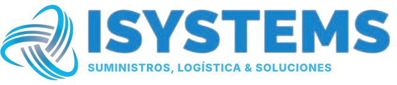

Producción de eventos y encuentros
Planeamos y producimos talleres, encuentros, ferias y eventos institucionales. Coordinamos montaje, alimentación, transporte y soporte técnico.

ContactarPortafolios corporativos · Colombia
Operamos eventos, transporte y suministros para entidades y empresas. Acompañamos a las organizaciones en el diseño y la operación de sus sistemas de gestión y SST.
Ver portafoliosNuestros servicios
Seleccione la línea de servicio que necesita. Esta página es una versión de prueba.
Portafolio 01
Operamos eventos de pequeña, mediana y gran escala, coordinamos el transporte y la distribución de insumos a municipios y documentamos cada entrega para la supervisión del contrato.
Qué hacemos
Integramos compras, producción, transporte y soporte documental. Su entidad trata con un solo responsable operativo en lugar de coordinar varios proveedores.
Planeamos y producimos talleres, encuentros, ferias y eventos institucionales. Coordinamos montaje, alimentación, transporte y soporte técnico.
Confeccionamos, clasificamos por tallas y empacamos las prendas para entregarlas con soporte documental en los puntos acordados.
Suministramos materiales pedagógicos, kits, refrigerios y otros productos para programas y actividades institucionales, con entregas en sedes y municipios.
Transportamos y distribuimos insumos, herramientas y equipos tecnológicos; también coordinamos el mantenimiento de equipos.
Modalidades de operación
Producción del encuentro, alimentación, transporte y montaje, con los soportes acordados para la supervisión.
Dotaciones, kits e insumos organizados por beneficiario y punto de entrega.
Entregas programadas a las sedes, con seguimiento y soportes para la supervisión.
Así ejecutamos cada contrato
Revisamos las especificaciones y necesidades de la entidad.
Definimos el cronograma de compras, montaje, transporte y entregas.
Coordinamos las compras, la confección o el montaje.
Preparamos y transportamos los bienes a cada punto o evento.
Verificamos la recepción y recopilamos actas, planillas y fotografías.
Entregamos los soportes acordados para la supervisión del contrato.
Cobertura
Atendemos las nueve subregiones de Antioquia y otros territorios del país, según las condiciones de cada contrato.
Portafolio 02 · línea independiente
Acompañamos a las empresas para que el cuidado de su gente y el cumplimiento de la norma se atiendan durante todo el año, no solo el día de la auditoría.
Servicios técnicos
Elaboramos y actualizamos la política, los objetivos, las matrices y el plan anual; también acompañamos a los comités.
Aplicamos la batería de riesgo psicosocial con profesionales especialistas y entregamos un informe para orientar las acciones de prevención y bienestar.
Analizamos las causas y formulamos planes de acción con seguimiento para prevenir nuevos eventos.
Capacitamos a trabajadores, brigadas, comités y mandos medios de acuerdo con los riesgos de la operación.
Acompañamos el diagnóstico, la implementación y la auditoría interna de sistemas ISO 45001, ISO 14001 e ISO 9001.
Organizamos indicadores de accidentalidad, ausentismo y avance del plan anual para su revisión por la gerencia.
Cómo lo contratamos
El portafolio propone una suscripción mensual con contrato de doce meses. La inversión se define en una cotización según el número de trabajadores y las sedes.
Para empresas de hasta 20 trabajadores y riesgo bajo o medio. Incluye actualización del SG-SST, matrices, plan anual y autoevaluación. Aproximadamente 10 horas al mes.
Para empresas de 21 a 100 trabajadores. Añade inspecciones, comités, investigación de accidentes, batería psicosocial y plan de emergencias. Aproximadamente 25 horas al mes.
Para empresas medianas y grandes con riesgos altos o exigencia HSEQ. Incluye integración ISO, auditoría interna, gestión de contratistas y tableros. Aproximadamente 50 horas al mes.
Cómo trabajamos
Seguimos el ciclo de planear, hacer, verificar y actuar (PHVA), con seguimiento mensual a partir de la puesta en marcha.
Revisamos el sistema existente y evaluamos los estándares mínimos.
Actualizamos la matriz legal y la identificación de peligros y riesgos.
Acompañamos a los comités y construimos el plan de emergencias.
Organizamos el cronograma de capacitación y el tablero base.
Realizamos seguimiento y entregamos un informe de gestión.
Contacto
Revisamos el estado de su sistema y preparamos una propuesta según la actividad, el tamaño y las prioridades de su empresa.